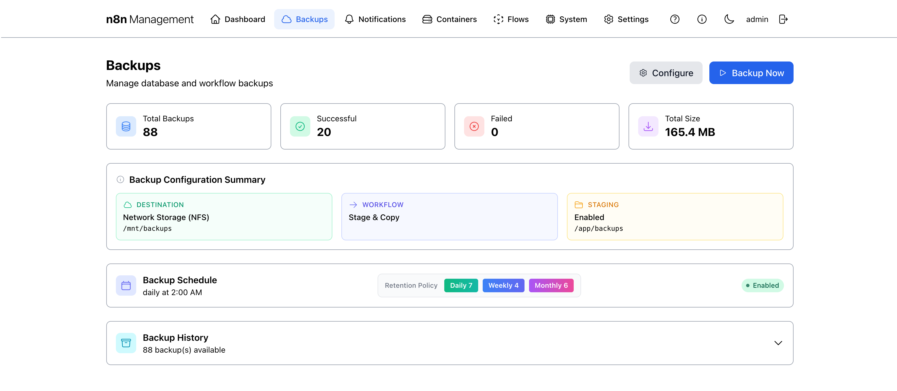
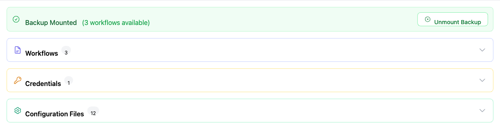
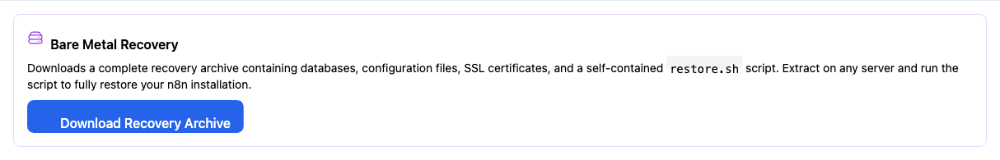
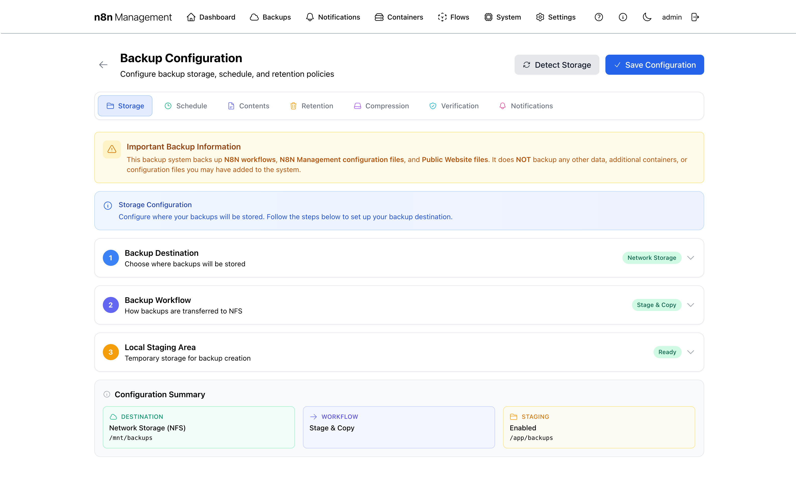
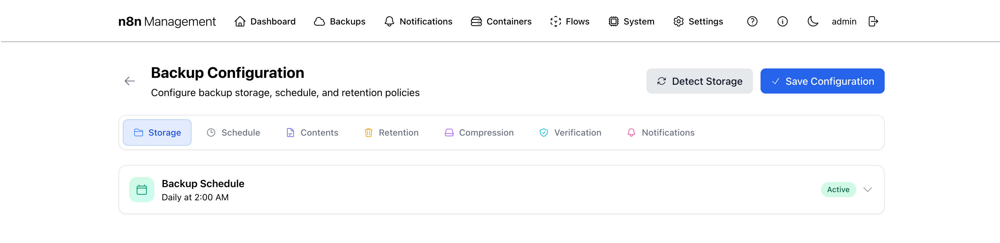
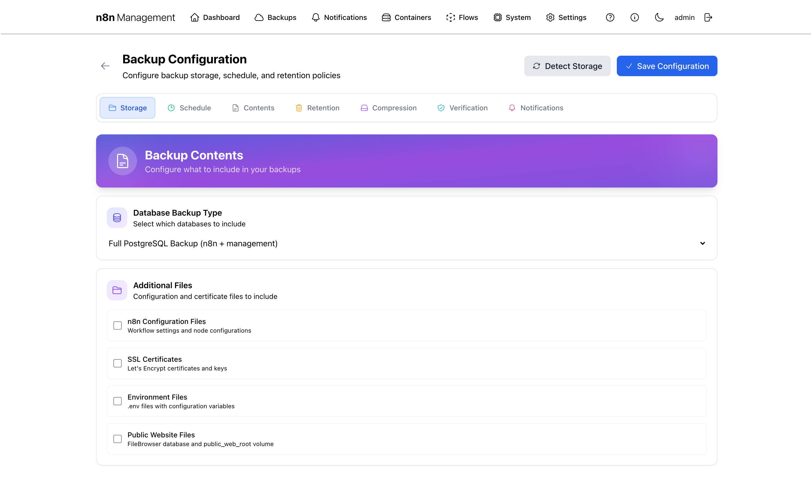
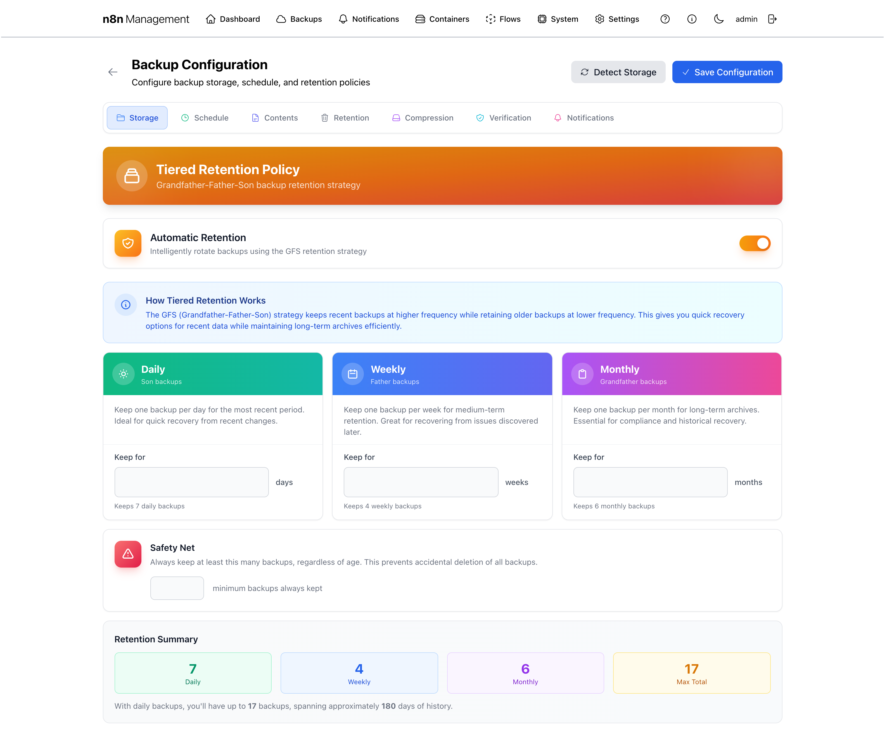
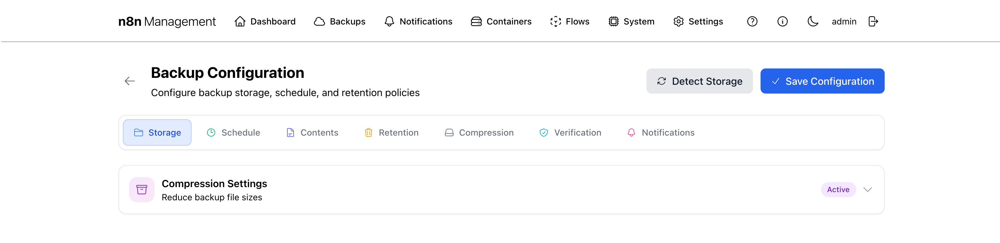
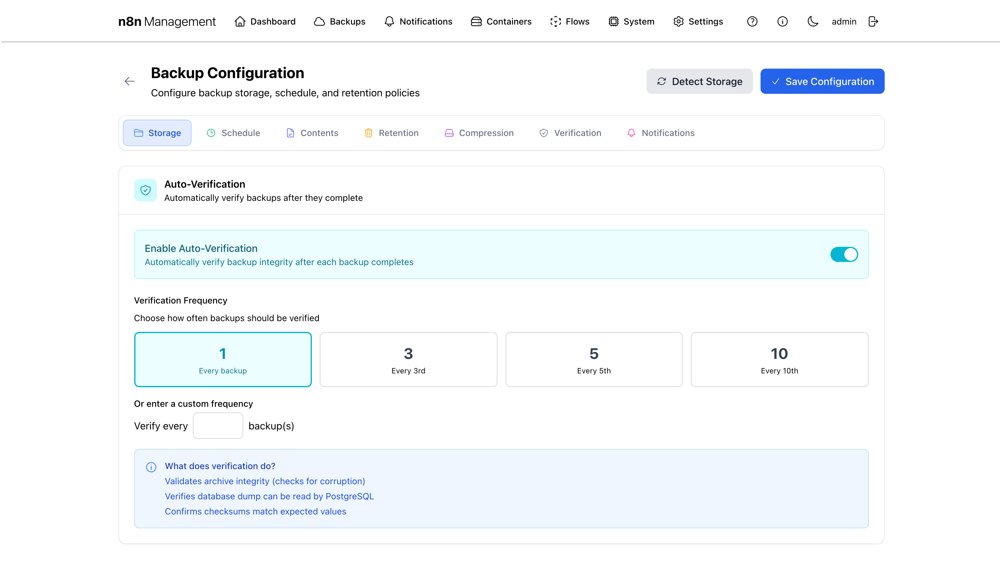
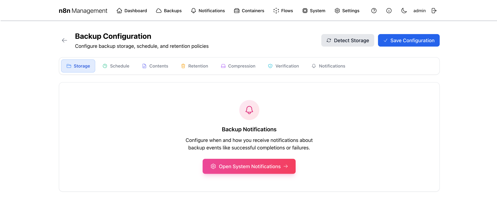

Backups
The Backups area is the most consequential part of the management console. It captures and verifies database dumps, configuration files, certificates, and public-website data on a schedule, applies a Grandfather-Father-Son retention policy, and lets you trigger ad-hoc backups when something major is about to change.
Overview
The main Backups page is a dashboard view: header with two action buttons, four summary cards, a configuration summary panel, the active backup schedule, and an expandable backup history. Anything you change live (turn the schedule off, change retention, etc.) happens on the dedicated Backup Configuration sub-page, reached via the Configure button.

Configure & Backup Now
Two buttons live in the top-right of the page header.
Configure
Opens the dedicated Backup Configuration page (/management/backup-settings). Every parameter that controls how, when, and what the backup engine does lives there, organized into seven tabs. See Backup Configuration below for the full tour.
Backup Now
Triggers a one-off backup immediately, using the current configuration. The button changes to a progress indicator while the backup runs. The new backup then appears in the Backup History with status Running while it executes, then Success (and Verified if auto-verification is enabled) once complete.
Summary cards
Four cards across the top show backup counts and footprint at a glance.
| Card | Counts |
|---|---|
| Total Backups | Every backup on disk regardless of status. |
| Successful | Backups whose run completed and (if auto-verification was enabled) verified clean. Lower than Total when some are still running, failed, or pending. |
| Failed | Backup runs that errored. Investigate immediately if non-zero. |
| Total Size | On-disk footprint of all retained backups, in human-readable units. |
Configuration summary
Below the stats, a read-only summary panel shows the three most important configuration choices side by side: DESTINATION (where backups land — local disk or NFS), WORKFLOW (Stage & Copy vs. Direct), and STAGING (whether a temporary local staging area is in use).
Backup Schedule
The Backup Schedule card displays the active cron schedule, the retention policy in effect (as Daily 7 / Weekly 4 / Monthly 6 pills by default), and whether the schedule is currently enabled.
Backup History
The Backup History card lists every retained backup. Collapsed by default — click anywhere on the card to expand. When expanded, the panel exposes status filters (All Statuses / Successful / Failed / Running / Pending), date filters (From / To), a per-page selector (10 / 20 / 50 / 100), and a sort toggle (Date / Size).
Each row shows: type icon, backup type label (e.g., postgres_full Backup), status pill (Success / Failed / Running / Pending), verification badge (Verified if integrity-checked), date+time+size, and a chevron on the right that expands to per-backup actions.
Per-row actions
Clicking the chevron on a backup row reveals seven action buttons:
| Action | Effect |
|---|---|
| Verify | Re-runs integrity checks against this specific backup. Validates archive integrity, confirms the database dump can be re-read by PostgreSQL, and compares stored checksums. The Verified badge on the row reflects the most recent verification result. |
| Protect | Marks this backup as "do not auto-delete." Even when retention policy would normally rotate this backup out, a protected backup stays put until you manually unprotect or delete it. Toggles state — clicking once protects, clicking again unprotects. |
| View Backup Contents | Opens an inline panel showing what's actually inside the backup archive — workflows, credentials, configuration files, and public website files — with sub-tabs for each category. Read-only inspection, no restore. |
| Selective Restore | Cherry-pick individual workflows, credentials, or config files from the backup. See below for the full flow. |
| Download Backup | Streams the entire compressed backup archive to your browser as a single .tar.gz file. Use this for off-site copies or laptop-side inspection. |
| Bare Metal | Downloads a complete recovery archive with a self-contained restore script. See below. |
| Delete | Removes the backup file from disk and the history record. Cannot be undone (the retention policy will eventually rotate old backups out automatically — only delete manually if you really need the disk space back right now). |
Selective Restore
Selective Restore lets you cherry-pick individual workflows, credentials, or config files from a backup and restore just those, leaving the rest of your live data untouched. This is the safe option compared to a full restore.
Step 1 — Mount the backup
The first time you click Selective Restore, the panel asks you to Mount the backup. Mounting spins up a temporary n8n_postgres_restore container and extracts the archive into it so individual items can be browsed and restored. This is a one-time setup per restore session.
Step 2 — Browse and restore
Once mounted, the panel updates to show three accordion categories — Workflows, Credentials, Configuration Files — each with a live count. An Unmount Backup button appears in the top-right.

Click any accordion to reveal individual items. Click any item row to surface its restore options.
Step 3 — Unmount when finished
When you're done restoring items, click Unmount Backup in the top-right. This stops and removes the temporary n8n_postgres_restore container and frees the resources it was holding.
Bare Metal
Bare Metal generates and downloads a complete recovery archive — databases, configuration files, SSL certificates, and a self-contained restore.sh script — designed to rebuild your n8n stack on a fresh server from scratch. Use it when migrating to new hardware or recovering from total host loss.

What's in the archive
- PostgreSQL dump for both databases (n8n + management).
- n8n configuration files and workflow exports.
- SSL certificates and private keys (Let's Encrypt volume contents).
.envwith deployment configuration.- Public website files if Public Website Files was enabled in Contents.
restore.sh— a self-contained shell script that takes a fresh host and rebuilds the stack.
Recovery procedure
- Provision a fresh host with Docker installed.
- Copy the downloaded archive to the host (scp, USB stick, etc.).
- Extract:
tar -xzf bare-metal-recovery-<date>.tar.gz. cdinto the extracted directory.- Run
./restore.sh— the script handles everything else.
Backup Configuration
Clicking Configure opens a dedicated configuration page (/management/backup-settings) with seven tabs. Each tab gates a logical area of behavior. The buttons in the top-right are Detect Storage (auto-discover NFS mounts and local volumes) and Save Configuration (persist changes).
Storage tab
The Storage tab is the entry point — choose where backups go and how they get there.

The three storage steps
- Backup Destination — pick between Local Storage and Network Storage (NFS). NFS requires the mount to already be configured (see Settings → Environment → NFS Backup Storage).
- Backup Workflow — choose between
Stage & Copy(recommended; writes locally first, then transfers) and direct write. Stage & Copy is safer because if NFS is briefly unreachable the backup still completes locally. - Local Staging Area — points to a writable local path (default
/app/backups) used as the staging location.
Schedule tab
The Schedule tab shows the active cron schedule and lets you toggle the automatic schedule on or off.

.env file (see Settings → Environment Variables). The UI here is the on/off switch and a human-readable summary of what's configured.Contents tab
The Contents tab is where you choose what goes into each backup. Two top-level groups: Database Backup Type and Additional Files.

Database Backup Type (radio)
| Option | Includes |
|---|---|
| Full PostgreSQL Backup | Both the n8n and management databases — the standard choice. |
| n8n Database Only | Just n8n's database. Smaller, faster, but loses the management console's own state if restored. |
| Management Database Only | Only the management database. Useful for management-config-only restores. |
Additional Files (checkbox)
| Option | What it captures |
|---|---|
| n8n Configuration Files | n8n's workflow settings and node configurations. |
| SSL Certificates | Let's Encrypt certs and private keys. |
| Environment Files | Your .env file and friends. |
| Public Website Files | FileBrowser database and the public_web_root volume. |
Retention tab (GFS)
Retention controls when backups age out. The console implements a GFS (Grandfather-Father-Son) retention policy: keep frequent backups recent, less-frequent backups longer.

The three GFS tiers
| Tier | Default | Use case |
|---|---|---|
| Daily (Son) | Keep 7 daily backups | Quick recovery from yesterday's mistake. |
| Weekly (Father) | Keep 4 weekly backups | Recover from issues discovered a week or two later. |
| Monthly (Grandfather) | Keep 6 monthly backups | Long-tail archives — quarterly audits, "I need to see what we had in March" requests. |
With defaults, the rotation keeps roughly: 7 days at daily granularity + 4 weeks at weekly + 6 months at monthly = ~6 months of usable history with about 17 backup files retained at any time, regardless of how many runs occur in between.
Compression tab
Toggle compression on or off and (where exposed) pick a compression level. Active by default.

Verification tab
Auto-verification re-reads each backup after it's written and confirms it can be restored cleanly. Highly recommended.

Frequency presets
- Every backup — verify every run. Safest, double the I/O.
- Every 3rd / 5th / 10th — periodic spot-check. Good middle ground.
- Custom — set your own N.
What verification actually does
- Validates archive integrity (decompresses without error, no corruption).
- Confirms the database dump can be re-read by PostgreSQL.
- Compares stored checksums against expected values.
Notifications tab
This tab is a pointer rather than a configuration surface — it explains that backup notifications are routed through the global System Notifications system and provides a button to open it.
